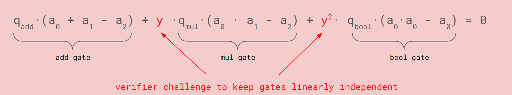
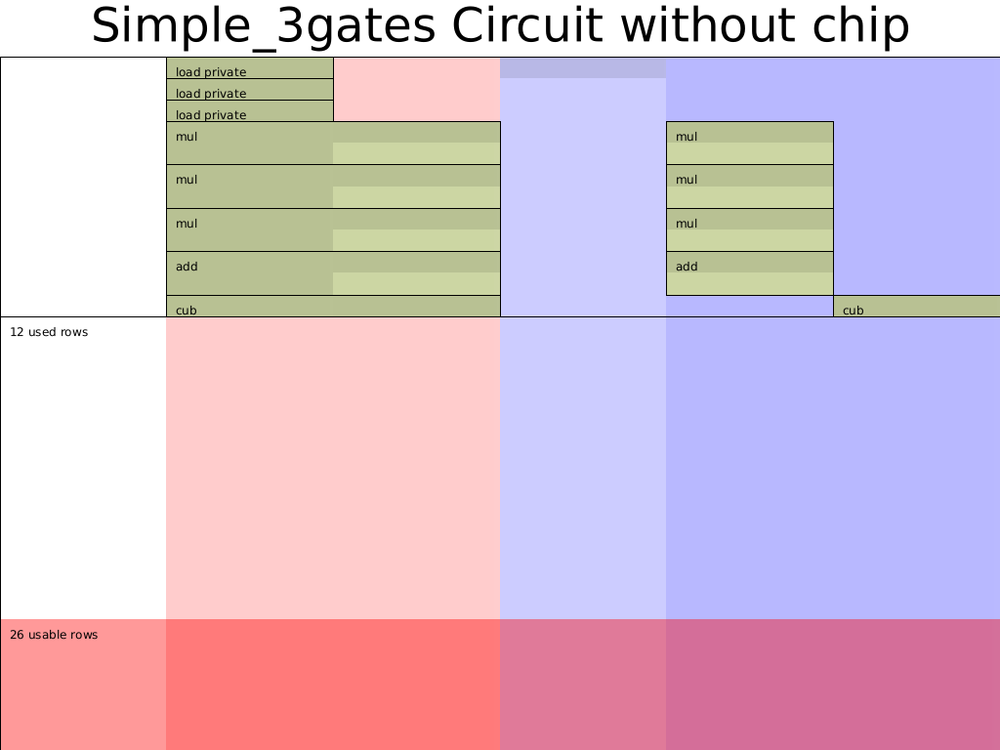
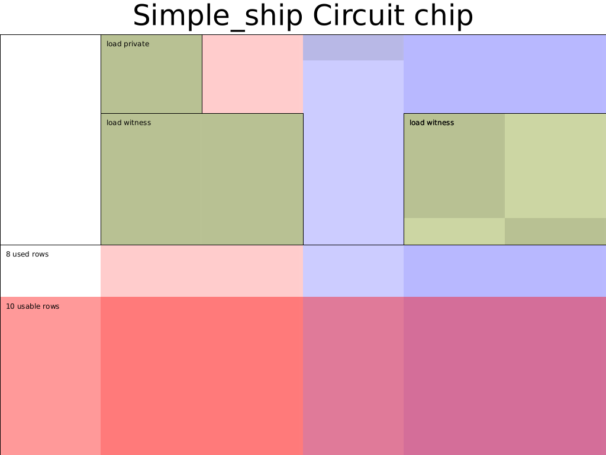

- 作者: @Po@Ethstorage.io
- 时间: 2023-10-20
- 校对: @Demian
Custom gates and Chip
本节我们以一个简单的电路为例，介绍 Halo2 中的自定义门(custom gates) 和 chip 的概念。
在上一节中，我们使用 Halo2 的 API 实现了只包含乘法门的简单电路，但是如果有多种 gate 呢，这种情况如何处理?
Custom gates
在 Halo2 中可通过自定义门(custom gate) 来实现，这里需要回顾下 Halo2 中自定义门(custom gate) 的 mental model 1: 
如上式，自定义门可以由任意多种不同的门线性相加构成，每一个门由选择器和门运算逻辑构成，如上式中第一个加法门选择器为 ，电路逻辑为 ，Halo2中可以通过 create_gate 创建每个门。不过需要注意的是，看起来这些门之间是独立的，但实际上这些门在最终的电路约束检查中会通过乘以一个随机数y，一次行检查一行的 witness 是否同时满足所有门的约束。
问题定义
本节则是证明如下电路:
#![allow(unused)] fn main() { private inputs: a,b,c public inputs: out constraints: d = a^2 * b^2 * c e = c + d out = e^3 }
注意到在 vanilla plonk 中约束的 degree 不能超过 2（只支持加法门和乘法门，witness有三列,且门的2个输入和1个输出只能在一行），但 halo2 支持通过 Ultra plonk 来实现更高阶数以及使用更灵活的单元格的 custom gate。这里我们使用一个高阶 custom gate 来实现 这条约束 (注: 其实 Ultra plonk 中乘法门和加法门也可以看作 custom gate，因此下文我们将该这条三次方约束的门称为立方门)，相比于原来需要 2 个乘法门实现该约束，custom gate 可以减少帮助约束的行数。
因此，我们可以画出电路 witness 表格:
| ins | a0 | a1 | s_mul | s_add | s_cub |
|---|---|---|---|---|---|
| out | a | ||||
| b | |||||
| c | |||||
| a | b | 1 | 0 | 0 | |
| ab | 0 | 0 | 0 | ||
| ab | ab | 1 | 0 | 0 | |
| absq | 0 | 0 | 0 | ||
| absq | c | 1 | 0 | 0 | |
| d | 0 | 0 | 0 | ||
| d | c | 0 | 1 | 0 | |
| e | 0 | 0 | 0 | ||
| e | out | 0 | 0 | 1 |
看到这里可能会产生疑问，这个 table 是如何填写出来的呢？其实，这个填写规则是与门约束一一对应的，而门约束可以很随意设计，所以关键是得确定
-
有几种门约束
-
每种门约束涉及哪几个单元格及多项式约束公式
Config
首先，需要明确电路配置(CircuitConfig)，即选取所需的 Advices, Selectors 和 Instance 列，并在 fn configure 中创建相应的门。
#![allow(unused)] fn main() { #[derive(Debug, Clone)] struct CircuitConfig { advice: [Column<Advice>;2], instance: Column<Instance>, s_mul: Selector, s_add: Selector, s_cub: Selector, } impl <F:Field> Circuit<F> for MyCircuit<F> { type Config = CircuitConfig; type FloorPlanner = SimpleFloorPlanner; fn without_witnesses(&self) -> Self { Self::default() } fn configure(meta: &mut ConstraintSystem<F>) -> Self::Config { let advice = [meta.advice_column(),meta.advice_column()]; let instance = meta.instance_column(); meta.enable_equality(instance); for c in &advice { meta.enable_equality(*c); } let s_mul = meta.selector(); let s_add = meta.selector(); let s_cub = meta.selector(); meta.create_gate("mul_gate", |meta| { let lhs = meta.query_advice(advice[0], Rotation::cur()); let rhs = meta.query_advice(advice[1], Rotation::cur()); let out = meta.query_advice(advice[0], Rotation::next()); let s_mul = meta.query_selector(s_mul); Constraints::with_selector(s_mul, vec![(lhs * rhs - out)]) }); meta.create_gate("add_gate", |meta| { let lhs = meta.query_advice(advice[0], Rotation::cur()); let rhs = meta.query_advice(advice[1], Rotation::cur()); let out = meta.query_advice(advice[0], Rotation::next()); let s_add = meta.query_selector(s_add); Constraints::with_selector(s_add, vec![(lhs + rhs - out)]) }); meta.create_gate("cub_gate", |meta| { let lhs = meta.query_advice(advice[0], Rotation::cur()); let out = meta.query_advice(advice[1], Rotation::cur()); let s_cub = meta.query_selector(s_cub); Constraints::with_selector(s_cub, vec![(lhs.clone()*lhs.clone()*lhs - out)]) }); CircuitConfig { advice, instance, s_mul, s_add, s_cub } } ... } }
这里我们使用了新的 API —— Constraints::with_selector，其实等价于我们之前熟悉的 vec![selecter * gate expression] 。
填入 Witness
除了上述的加法门和乘法门之外，我们需要为立方运算增加一个填 witness 的辅助函数 fn cub :
#![allow(unused)] fn main() { ... fn cub<F:Field>( config: &CircuitConfig, mut layouter: impl Layouter<F>, a: Number<F>, ) -> Result<Number<F>, Error> { layouter.assign_region( || "cub", |mut region| { config.s_cub.enable(&mut region, 0)?; a.0.copy_advice(|| "lhs", &mut region, config.advice[0], 0)?; let value = a.0.value().copied()*a.0.value().copied()*a.0.value().copied(); region.assign_advice(|| "out=lhs^3", config.advice[1], 0, || value) .map(Number) }) } ... }
注意: 推导并填入 witness 的方式一定要与上述自定义门中引用的单元格和计算方式一致，否则会导致欠约束或约束错误。
然后补充 Circuit Trait 中的 synthesis 函数:
#![allow(unused)] fn main() { impl <F:Field> Circuit<F> for MyCircuit<F> { ... fn synthesize(&self, config: Self::Config, mut layouter: impl Layouter<F>) -> Result<(), Error> { let a = load_private(&config,layouter.namespace(|| "load a"), self.a)?; let b = load_private(&config,layouter.namespace(|| "load b"), self.b)?; let c = load_constant(&config,layouter.namespace(|| "load c"), self.c)?; let ab = mul(&config,layouter.namespace(|| "a*b"), a, b)?; let absq = mul(&config,layouter.namespace(|| "ab*ab"), ab.clone(), ab)?; let d = mul(&config, layouter.namespace(|| "absq*c"), absq, c.clone())?; let e = add(&config, layouter.namespace(|| "absq + c"), d, c)?; let out = cub(&config, layouter.namespace(|| "absq^3"), d)?; //expose public layouter.namespace(|| "expose out").constrain_instance(out.0.cell(), config.instance, 0) } } }
测试
实例化电路，并调用相应的 Mock Prover 来验证。
#![allow(unused)] fn main() { cargo test test_simple_3gates }
输出相应的电路布局图cargo test plot_3gates_circuit --features dev-graph:

可以看出 Halo2 的 Simple Layouter 对乘法门选择器(
s_mul) 和加法门选择器(s_add) 做了优化，将这两列合并为了 1 列。
Chip
在上述实现中，我们填入 witness 的函数和 Config 是分离的，为了更好地复用这些代码，类似于集成电路由很多个 Chip 构成，Halo2 一般将一系列紧密相关的实现特定约束的函数(config 以及相应的提供 witness 的函数) 抽象到一个 Chip 模块。
具体的代码参考在这里，这里我们简单对比一下 2 部分代码的区别：
在前部分的 custom_gate 的实现中：
- 手动定义了
load_private(), load_constant() - 手动定义了
fn mul() / fn add()/ fn cub()这几个处理 witness 的函数
#![allow(unused)] fn main() { // custom_gate.rs fn load_private() { ... } fn load_constant() { ... } fn mul() / fn add() / fn cub() { ... } impl <F: Field> Circuit<F> for MyCircuit<F> { fn configure() fn synthesize() { let (a, b) = load_private() ..; let ab = mul(a, b); // ... } } }
在本节的 simple_chip 的实现中:
- 将 load_private()、mul()、cub() 等操作直接封装到了 SimpleChip 中
- 在实现 MyCircuit 时，直接调用 SimpleChip 里的 configure() 来构建约束; 和 assign() 来填入 witness
#![allow(unused)] fn main() { impl <F: Field> SimpleChip<F> { fn configure() // same as in custom_gate. fn assign() { // load_private: assign_region( assign_advice ) // like fn mul / fn add() / fn cub() copy_advice() .. } impl <F: Field> Circuit<F> for MyCircuit<F> { let chip = SimpleChip::construct(config); let out = chip.assign(layouter.namespace(|| "simple ship"), self.a, self.b, self.c)?; chip.expose_public(layouter, out, 0) } }
建议仔细阅读、对比上下 2 部分代码，体会其在设计上的不同和 chip 这种模块化封装的思维。
我们将本节中的约束抽象为 SimpleChip，将原来独立的 assign witness 的几个函数 (load_private、load_constant、add、mul和cub) 合并到 Simple Chip 的 assign 方法中。此外，采用如下电路布局压缩所需的行数（在电路中我们只划分了了两个大的 region，这样就减小了复制 ab、absq、c 和 c 这四个约束） :
| ins | a0 | a1 | s_mul | s_add | s_cub |
|---|---|---|---|---|---|
| out | a | ||||
| b | |||||
| c | |||||
| a | b | 1 | 0 | 0 | |
| ab | ab | 1 | 0 | 0 | |
| absq | c | 1 | 0 | 0 | |
| d | c | 0 | 1 | 0 | |
| e | out | 0 | 0 | 1 |
完整代码见 Halo2 tutorials: chap_2/simple_chip
test & 输出电路布局图
#![allow(unused)] fn main() { cargo test test_simple_ship cargo test plot_chip_circuit --features dev-graph }
采用 Chip 的电路布局图为: 
references:
0xPARC halo2 lectures https://learn.0xparc.org/halo2/